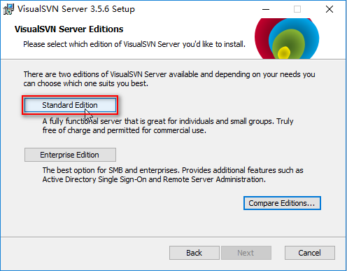
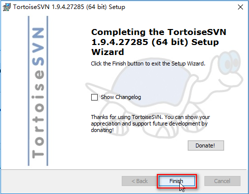
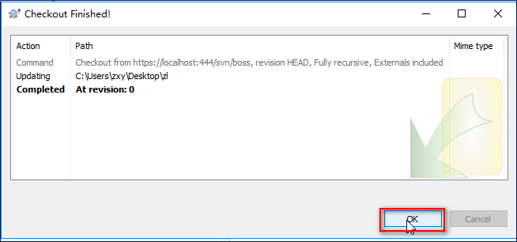
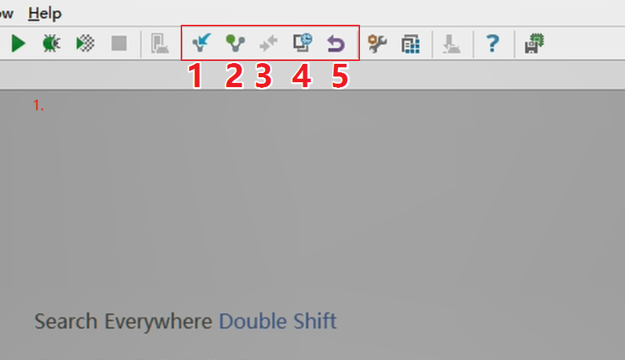
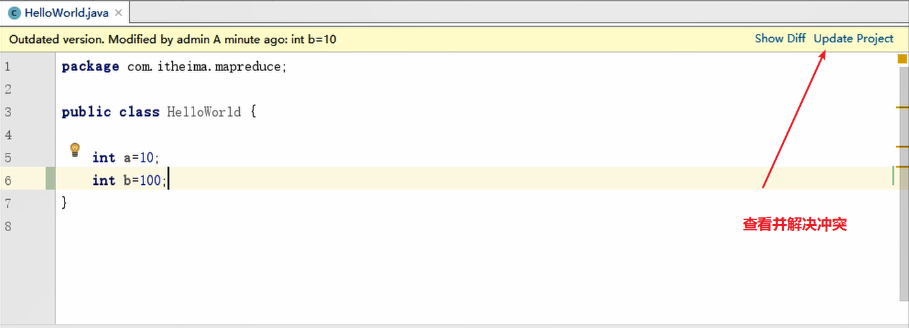
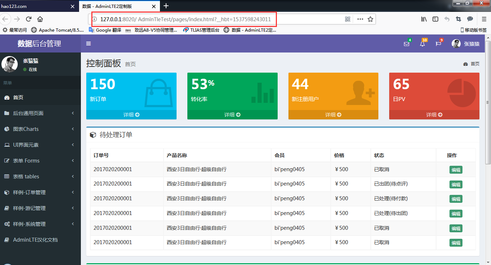
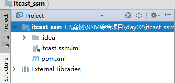
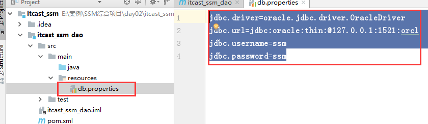

SSM框架练习一SVNsvn概述简介基本操作管理方案SVN架构windows下VisualSVN使用介绍VisualSVN安装VisualSVN管理用户VisualSVN管理组VisualSVN管理仓库赋予权限windows下tortiseSVN使用介绍TortoiseSVN安装TortoiseSVN常用操作浏览仓库Checkout(检出)Add(添加)：添加文件给SVN管理Commit(提交) : 提交代码导远程仓库Update(更新) : 更新服务器代码到本地Delete(删除) : 同时删除本地和svn服务器中的文件导入和导出冲突的产生和解决IDEA下SVN使用配置IDEA关联SVNShare Project:提交工程导svn服务器1. 创建仓库,复制仓库路径2. 分享工程CheckoutCommit/Add/Update方式一方式二方式三ignor解决冲突SVN规范目录规范将项目提交到主干打分支或者标记分支与主干合并AdminLTEAdminLTE介绍AdminLTE基本使用AdminLTE入门案例AdminLTE布局与皮肤使用AdminLTE制作首页SSM综合练习介绍与演示需求介绍表结构介绍(二)SSM框架练习二数据库准备(了解)在oracle中创建一个新用户ssm并授权创建表空间创建用户赋予用户权限2、创建表创建SSM整合项目(重点)创建父工程创建itcast_ssm_utils子模块创建itcast_ssm_pojo子模块编写实体类4、创建itcast_ssm_dao子模块在dao的pom中引用pojo创建数据连接文件db.properties创建spring核心配置文件创建itcast_ssm_service子模块在pom.xml中引用dao子模块创建spring核心配置文件创建itcast_ssm_web子模块在pom.xml中引用service子模块补全web工程的目录添加log4j配置文件创建spring核心配置文件创建srpingmvc核心配置文件修改web.xml,将web.xml的版本修改为3.0在web.xml中添加spring监听在web.xml中配置springmvc前端控制器在web.xml中配置中文乱码过滤器配置AdminLTE环境产品相关操作(掌握)查询所有产品编写dao接口编写service编写页面编写controller处理实体类中的状态和出发时间修改状态属性在itcast_ssm_utils子模块中添加日期转换类修改实体类中出发时间属性添加main.jsp主页面素材准备添加产品信息添加产品流程页面准备代码编写编写dao接口编写service接口和实现类编写controller日期类型转换订单相关操作（掌握,视频12-16）订单表相关信息订单表结构分析会员表结构分析旅客表结构分析创建与表对应的pojo实体类订单类会员类旅客表订单操作流程分析查询所有订单将资料中的orders-list.jsp复制到webapp/pages目录中编写dao接口编写service接口和实现类修改导航中的路径webapp/pages/aside.jsp编写controller修改orders实体类分页操作PageHelper概述PageHelper配置集成pageHelper方式一:引入 Jar 包方式二：使用 Maven（推荐）PageHelper环境配置在mybatis中配置拦截器插件在spring中配置拦截器插件3、PageHelper参数介绍使用PageHelper方式一：RowBounds方式的调用方式二:PageHelper.startPage 静态方法调用(重点,日常使用方式)订单分页查询修改service接口修改service实现类修改controller创建orders-list-page.jsp页面修改aside.jsp中的导航链接实现分页各按钮功能首页按钮尾页按钮上一页按钮下一页按钮循环显示页码页码部分完整代码PageInfo对象属性解释(三)SSM框架练习三订单详情操作订单详情查询流程分析订单详情查询代码实现修改orders-list.jsp创建orders-show.jsp编写dao接口编写会员dao接口修改ProductMapper接口编写旅客dao接口修改订单dao接口修改IOrdersService接口修改OrdersController修改Traveller实体类属性springSecurity权限管理权限涉及到的表用户表UserInfo角色表Role用户与角色关联关系表userinfo_role（多对多关系）权限资源表permission权限资源与角色关联关系表role_permission（多对多关系）编写实体类Spring Security概述Spring Security入门案例配置pom坐标添加spring Security配置文件在web.xml中加载Spring SecuritySpring Security使用自定义页面在webapp中新建页面新建success.html新建failer.html修改spring-security.xmlSpring Security使用数据库认证UserDetails类User类UserDetailsService用户登录模块登录流程分析登录功能实现创建登录和失败页面修改spring-security.xml创建dao接口创建UserService类IUserService接口UserService实现类从数据库获取角色信息编写dao接口编写roledao接口修改userinfodao接口修改UserService用户注销(四)SSM框架练习四用户查询将资料中的user-list.jsp页面复制到项目中修改aside.jsp中用户管理菜单的链接修改UserInfoMapper数据操作类创建service接口创建controller控制器用户添加用户添加流程分析创建添加用户页面修改UserInfodao接口修改service接口和实现类在spring-security.xml中配置加密方式加密盐概念修改controller解决登录时密码加密后无法登录在spring-security.xml配置加密方式6.2、修改登录业务类修改前修改后用户详情操作用户详情查询流程创建用户详情页面编写dao查询根据角色id查询资源权限根据用户id查询角色信息根据用户id查询用户信息修改UserInfoService接口修改user-list.jsp中详情按钮接修改UserInfoController控制器修改User-show.jsp页面查询角色操作查询所有角色流程分析创建角色列表页面修改RoleMapper接口创建RoleService接口修改aside.jsp中用户管理按钮链接创建controller添加角色操作角色添加流程分析创建角色添加页面编写dao接口编写service接口编写controller控制器查询所有资源权限(会用,视频13)创建资源列表页面编写dao接口编写service接口修改aside.jsp中资源管理按钮链接编写controller控制器添加资源权限编写添加资源权限页面编写dao编写service接口修改permission-add.jsp中提交地址修改controller(四)SSM框架练习五SSM综合练习第五天用户关联角色操作用户关联角色流程分析显示用户可以添加的角色 创建添加角色页面编写dao接口在RoleMapper中添加查询方法修改RoleService接口修改user-list.jsp中添加角色按钮接修改UserController控制器user-role-add.jsp页面修改3、用户关联角色修改user-role-add.jsp页面的表单提交地址创建UserInfoMapper接口创建UserInfoService接口在UserContrller控制器中添加方法角色关联权限操作将资料中的role-permission-add.jsp添加到项目中根据角色id查询出当前角色可以添加的资源PermissionMapper中添加查询方法修改PermissionService接口修改role-list.jsp中添加角色按钮修改RoleController将角色信息和资源信息添加到role_permission表修改role-permission-add.jsp的form表单路径创建RolePermissionMapper接口创建RolePermissionMapperService接口修改RoleController服务器端方法级别控制JSR-250注解在spring-security.xml配置文件中开启注解使用JSR-250注解在pom.xml中添加jsr-250坐标@Secured注解在spring-security.xml配置文件中开启注解使用@Secured注解支持表达式的注解在spring-security.xml配置文件中开启表达式注解表达式注解页面端权限控制在pom.xml中导入坐标在jsp页面导入名称空间常用标签authentication语法:属性解释authorize语法:accesscontrollist语法:属性解释:AOP日志操作日志表(sysLog)结构sql语句实体类记录日志创建SysLogMapper接口创建SysLogService接口创建aop通知类修改springmvc核心配置文件修改springSecurity配置文件查询日志查询日志流程分析查询日志代码编写导入log页面编写查询所有日志方法配置mapper.xml配置文件修改service接口创建SysLogController修改aside.jsp中访问日志链接
SSM框架练习一
SVN
svn概述
简介
SVN是Subversion的简称，是一个自由开源的版本控制系统。
Subversion将文件存放在中心版本库里，这个版本库很像一个普通的文件服务器，不同的是，它可以记录每一次文件和目录的修改情况，这样就可以借此将数据恢复到以前的版本，并可以查看数据的更改细节早期版本控制使用的是CVS,后来SVN替代了CVS,随着android兴起，出现Git版本控制工具，后续我们会学到。
基本操作
管理方案
多用户操作过程中,如何让系统允许用户共享信息，而不会让他们因意外而互相干扰？
- 复制-修改-合并方案(Subversion默认的模式) 在这种模型里，每一个客户读取项目配置库建立一个私有工作副本——版本库中文件和目录的本地映射。用户并行 工作，修改各自的工作副本，最终，各个私有的复制合并在一起，成为最终的版本，这种系统通常可以辅助合并操 作，但是最终要靠人工去确定正误。
- 锁定-修改-解锁方案 在这样的模型里，在一个时间段里配置库的一个文件只允许被一个人修改。 此模式不适合软件开发这种工作。
SVN架构
Subversion支持Linux和Windows，更多是安装在Linux下。
svn服务器有2种运行方式：独立服务器和借助apache运行。两种方式各有利弊，用户可以自行选择。
svn存储版本数据也有2种方式：BDB一种事务安全型表类型和FSFS一种不需要数据库的存储系统。
因为BDB方式在服务器中断时，有可能锁住数据，所以还是FSFS方式更安全一点。
windows下VisualSVN使用介绍
VisualSVN安装
运行VisualSVN-Server-3.5.6-x64.msi安装程序

注意：443端口号可能跟vmware有些冲突，可自行改一下，我已改为444。

VisualSVN管理用户
单击电脑左下角找到svn管理器，并打开：
VisualSVN管理组
VisualSVN管理仓库
赋予权限
windows下tortiseSVN使用介绍
TortoiseSVN安装
运行TortoiseSVN-1.9.4.27285-x64-svn-1.9.4.msi安装程序

TortoiseSVN常用操作
浏览仓库
Checkout(检出)
我们的svn服务器中有一个boss项目，我们如何把它down下来呢？

在zl文件夹中，我们可以看到一个.svn的隐藏文件，这个文件不要动！！！
Add(添加)：添加文件给SVN管理
选中文件，右键：
注意:安装客户端要重启电脑，否则不会出现图标
Commit(提交) : 提交代码导远程仓库
提交成功
Update(更新) : 更新服务器代码到本地
更新到历史版本:

Delete(删除) : 同时删除本地和svn服务器中的文件
在空白的地方右键提交或者提交所在的目录提交本次修改：
导入和导出
只的是单纯的从svn服务器上把代码导出来和导进去，导出来的代码没有.svn隐藏目录,也就不受svn版本控制,这也是导出和checkout的区别
在桌面或者目录空白处鼠标右键：
冲突的产生和解决
- 冲突产生的原因
我们在公司都是一个团队来开发项目，当不同的人修改了同一个文件并且直接提交时就可能会产生冲突。
- 如何解决冲突
- 点击上图的ok，出现下图，
- 选中update，更新我们这次提交，在我们本地的目录中就会出现如下文件：
xxxxxxxxxxHelloSVN.java 它是服务器上的文件与本地文件合并HelloSVN.java.mine 本地修改后的文件HelloSVN.java.r6 修改前的文件HelloSVN.java.r7 对方修改后的文件我们可以采用手动Merge,解决冲突后，重新commit
最后回到目录中提交我们修改的文件：
IDEA下SVN使用
配置IDEA关联SVN
Share Project:提交工程导svn服务器
1. 创建仓库,复制仓库路径
2. 分享工程


xxxxxxxxxx1.Update Project 更新项目2.Commit changes 提交项目上所有变化文件3.Compare with the Same Repository Version 当前文件与服务器上该文件通版本的内容进行比较。如果当前编辑的文件没有修改，则是灰色不可点击。4.Show history 显示当前文件的历史记录5.Revert 还原当前被修改的文件到违背修改的版本状态下
xxxxxxxxxx1.Local Changes 本地修改过的文件都会出现在这里2.Repository svn仓库所有提交记录3.Incoming 本地还没有更新的别人提交的代码
Checkout
Commit/Add/Update
方式一
方式二
方式三
注意: add和Update类型Commit
ignor
一些编译之后的文件以及IDEA的配置文件我们不需要SVN管理,所以就需要把一些文件进行忽略
解决冲突

SVN规范
目录规范
在visualSVN中创建仓库时，可以选择创建带有目录结构的仓库
xxxxxxxxxxtrunk 主干目录，此目录下的文件为基准文件branches 用于开发的分支目录tags 用于发布的版本目录假设有一个项目OA,我们完成了1.0版本，这时就可以打一个tags后续我们在OA项目上添加一个新的模块(及时通讯),我们就可以开一个分支,又有一个公司需要在我们OA基础上添加财务管理模块，我们又可以打一个分支。我们后续针对OA的1.0版本在升级，我们不需要原来附加功能,就可以在原来的主干上继续开发，形成OA2.0版本，开发完成后就可以在打一个tags
将项目提交到主干
打分支或者标记
分支的定义规则: Project name+日期时间+功能点 Tags的定义规则 Project name+版本号 版本号定义为三段数字 编号 xxx.xxx.xxx 第一个:革命性的产品升级版 第二个:新功能版 第三个:修正bug
分支与主干合并

注意:
主干合并导分支,在分支上进行操作
分支合并导主干,在主干上进行操作
AdminLTE
AdminLTE介绍
AdminLTE是一款建立在bootstrap和jquery之上的开源的模板主题工具，它提供了一系列响应的、可重复使用的组件，并内置了多个模板页面；同时自适应多种屏幕分辨率，兼容PC和移动端。通过AdminLTE，我们可以快速的创建一个响应式的Html5网站。AdminLTE框架在网页架构与设计上，有很大的辅助作用，尤其是前端架构设计师，用好AdminLTE 不但美观，而且可以免去写很大CSS与JS的工作量。
我们可以从此网站获得AdminLTE源代码:https://github.com/almasaeed2010/AdminLTE
AdminLTE结构:
xxxxxxxxxxAdminLTE/├── dist/│ ├── CSS/│ ├── JS│ ├── img├── build/│ ├── less/│ │ ├── AdminLTE's Less files│ └── Bootstrap-less/ (Only for reference. No modifications have been made)│ ├── mixins/│ ├── variables.less│ ├── mixins.less└── plugins/├── All the customized plugins CSS and JS files
AdminLTE依赖于两个框架Bootstrap3与JQuery1.11+
AdminLTE汉化:
大家可以去github上下载https://github.com/itheima2017/adminlte2-itheima
也可以在 http://research.itcast.cn/adminlte2-itcast/release/dist/pages/all-admin-index.html 在线进行浏览
资料中已提供此版本 ：
AdminLTE2-IT黑马-定制版是基于FIS3进行开发，在目录结构中assets、modules、pages、 plugins都是前端开发时所使用到的，最终发布的就是release。所以对于我们使用AdminLTE2-IT黑 马-定制版来说，我们只需要关注release目录下的结构就可以
在release目录下有css、img、pages、plugins目录。前两者就不在解决pages是产生的一些定制 的页面，而plugins中是相关的插件，例如jquery、bootstrap等相关的css与js文件。
AdminLTE基本使用
AdminLTE入门案例
将AdminLTE中release\dist下的css,img,plugins三个目录复制到项目中
在项止中创建pages目录并将index.html面面移动到pages目录中或将修改页面上样式的路径
将AdminLTE中release\dist\pages中的all-admin-index.html内容复制到index.html页面
运行效果

AdminLTE布局与皮肤
x布局.wrapper包住了body下的所有代码.main-header里是网站的logo和导航栏的代码.main-sidebar里是用户面板和侧边栏菜单的代码.content-wrapper里是页面的页面和内容区域的代码.main-footer里是页脚的代码.control-sidebar里是页面右侧侧边栏区域的代码布局选项fixed：固定layout-boxed：盒子布局• layout-top-nav：顶部隐藏sidebar-collapse：侧边栏隐藏sidebar-mini：侧边栏隐藏时有小图标皮肤skin-blue：蓝色skin-black：黑色skin-purple：紫色skin-yellow：黄色skin-red：红色skin-green：绿色以上项我们可以查看start.html页面中查看。
使用AdminLTE制作首页
页面效果如下:
创建images目录并将素材center.jpg放入
复制index.html并改名为main.html
将main.html中内容区域的内容清空并添加图片

效果
SSM综合练习介绍与演示
需求介绍
参考下发视频
表结构介绍

(二)SSM框架练习二
数据库准备(了解)
在oracle中创建一个新用户ssm并授权
创建表空间
xxxxxxxxxxcreate tablespace ssm_exam -- 表空间名称datafile 'c:\itheima.dbf' -- 指定表空间对应的数据文件size 100m -- 定义表空间的初始大小autoextend on -- 自动增长 ，当表空间存储都占满时，自动增长next 10m; -- 指定的是一次自动增长的大小。10m创建用户
xxxxxxxxxxcreate user itheima -- 用户名称identified by itheima -- 指定登录密码default tablespace ssm_exam -- 指定所属表空间ssm_exam赋予用户权限
xxxxxxxxxxgrant dba to itheima ;2、创建表
表结构如下 ：
DepatrureTime的类型要改为date否则在添加时会报错
使用itheima用户登录并创建表:
xxxxxxxxxxCREATE TABLE product( id varchar2(32) default SYS_GUID() PRIMARY KEY, productNum VARCHAR2(50) NOT NULL, productName VARCHAR2(50), cityName VARCHAR2(50), DepartureTime timestamp, productPrice Number, productDesc VARCHAR2(500), productStatus INT, CONSTRAINT product UNIQUE (id, productNum))insert into PRODUCT (id, productnum, productname, cityname, departuretime, productprice,productdesc, productstatus)values (sys_guid(), 'itcast-002', '北京三日游', '北京', to_timestamp('10-10-2018 10:10:00.000000', 'dd-mm-yyyy hh24:mi:ss.ff'), 1200, '不错的旅行', 1);insert into PRODUCT (id, productnum, productname, cityname, departuretime, productprice,productdesc, productstatus)values (sys_guid(), 'itcast-003', '上海五日游', '上海', to_timestamp('25-04-2018 14:30:00.000000', 'dd-mm-yyyy hh24:mi:ss.ff'), 1800, '魔都我来了', 0);insert into PRODUCT (id, productnum, productname, cityname, departuretime, productprice,productdesc, productstatus)values (sys_guid(), 'itcast-001', '北京三日游', '北京', to_timestamp('10-10-2018 10:10:00.000000', 'dd-mm-yyyy hh24:mi:ss.ff'), 1200, '不错的旅行', 1);在oracle8i以后提供了一个生成不重复的数据的一个函数sys_guid()一共32位，生成的依据主要是时间和机器码，具有世界唯一性，类似于java中的UUID（都是世界唯一的）。
创建SSM整合项目(重点)
SSM项目为父子工程，子模块如下:
| 工程名称 | 工程类型 |
| :------------- | :------------- |
| itcast-ssm-domain | jar工程
| itcast-ssm-utils | jar工程 |
| itcast-ssm-dao | jar工程 |
| itcast-ssm-service | jar工程 |
| itcast-ssm-web | war工程 |
创建父工程

在pom.xml中导入ssm框架所需求坐标
xxxxxxxxxx <project xmlns="http://maven.apache.org/POM/4.0.0" xmlns:xsi="http://www.w3.org/2001/XMLSchema-instance" xsi:schemaLocation="http://maven.apache.org/POM/4.0.0 http://maven.apache.org/xsd/maven-4.0.0.xsd"> <modelVersion>4.0.0</modelVersion> <groupId>cn.itcast</groupId> <artifactId>itcast_ssm</artifactId> <packaging>pom</packaging> <version>1.0-SNAPSHOT</version> <!-- 统一管理jar包版本 --> <properties> <spring.version>5.0.2.RELEASE</spring.version> <slf4j.version>1.6.6</slf4j.version> <log4j.version>1.2.12</log4j.version> <oracle.version>10.2.0.2.0</oracle.version> <mybatis.version>3.4.5</mybatis.version> <spring.security.version>5.0.1.RELEASE</spring.security.version> </properties> <dependencies> <!-- spring --> <dependency> <groupId>org.aspectj</groupId> <artifactId>aspectjweaver</artifactId> <version>1.6.8</version> </dependency> <dependency> <groupId>org.springframework</groupId> <artifactId>spring-aop</artifactId> <version>${spring.version}</version> </dependency> <dependency> <groupId>org.springframework</groupId> <artifactId>spring-context</artifactId> <version>${spring.version}</version> </dependency> <dependency> <groupId>org.springframework</groupId> <artifactId>spring-context-support</artifactId> <version>${spring.version}</version> </dependency> <dependency> <groupId>org.springframework</groupId> <artifactId>spring-web</artifactId> <version>${spring.version}</version> </dependency> <dependency> <groupId>org.springframework</groupId> <artifactId>spring-orm</artifactId> <version>${spring.version}</version> </dependency> <dependency> <groupId>org.springframework</groupId> <artifactId>spring-beans</artifactId> <version>${spring.version}</version> </dependency> <dependency> <groupId>org.springframework</groupId> <artifactId>spring-core</artifactId> <version>${spring.version}</version> </dependency> <dependency> <groupId>org.springframework</groupId> <artifactId>spring-test</artifactId> <version>${spring.version}</version> </dependency> <dependency> <groupId>org.springframework</groupId> <artifactId>spring-webmvc</artifactId> <version>${spring.version}</version> </dependency> <dependency> <groupId>org.springframework</groupId> <artifactId>spring-tx</artifactId> <version>${spring.version}</version> </dependency> <dependency> <groupId>junit</groupId> <artifactId>junit</artifactId> <version>4.12</version> <scope>test</scope> </dependency> <dependency> <groupId>javax.servlet</groupId> <artifactId>javax.servlet-api</artifactId> <version>3.1.0</version> <scope>provided</scope> </dependency> <dependency> <groupId>javax.servlet.jsp</groupId> <artifactId>jsp-api</artifactId> <version>2.0</version> <scope>provided</scope> </dependency> <dependency> <groupId>jstl</groupId> <artifactId>jstl</artifactId> <version>1.2</version> </dependency> <!-- log start --> <dependency> <groupId>log4j</groupId> <artifactId>log4j</artifactId> <version>${log4j.version}</version> </dependency> <dependency> <groupId>org.slf4j</groupId> <artifactId>slf4j-api</artifactId> <version>${slf4j.version}</version> </dependency> <dependency> <groupId>org.slf4j</groupId> <artifactId>slf4j-log4j12</artifactId> <version>${slf4j.version}</version> </dependency> <!-- log end --> <dependency> <groupId>org.mybatis</groupId> <artifactId>mybatis</artifactId> <version>${mybatis.version}</version> </dependency> <dependency> <groupId>org.mybatis</groupId> <artifactId>mybatis-spring</artifactId> <version>1.3.0</version> </dependency> <dependency> <groupId>c3p0</groupId> <artifactId>c3p0</artifactId> <version>0.9.1.2</version> <type>jar</type> <scope>compile</scope> </dependency> <dependency> <groupId>com.github.pagehelper</groupId> <artifactId>pagehelper</artifactId> <version>5.1.2</version> </dependency> <dependency> <groupId>org.springframework.security</groupId> <artifactId>spring-security-web</artifactId> <version>${spring.security.version}</version> </dependency> <dependency> <groupId>org.springframework.security</groupId> <artifactId>spring-security-config</artifactId> <version>${spring.security.version}</version> </dependency> <dependency> <groupId>org.springframework.security</groupId> <artifactId>spring-security-core</artifactId> <version>${spring.security.version}</version> </dependency> <dependency> <groupId>org.springframework.security</groupId> <artifactId>spring-security-taglibs</artifactId> <version>${spring.security.version}</version> </dependency> <dependency> <groupId>com.oracle</groupId> <artifactId>ojdbc14</artifactId> <version>${oracle.version}</version> </dependency> <dependency> <groupId>javax.annotation</groupId> <artifactId>jsr250-api</artifactId> <version>1.0</version> </dependency> </dependencies> <!-- 添加tomcat7插件 --> <build> <pluginManagement> <plugins> <plugin> <groupId>org.apache.maven.plugins</groupId> <artifactId>maven-compiler-plugin</artifactId> <version>3.2</version> <configuration> <source>1.8</source> <target>1.8</target> <encoding>UTF-8</encoding> <showWarnings>true</showWarnings> </configuration> </plugin> </plugins> </pluginManagement> </build></project>创建itcast_ssm_utils子模块
创建itcast_ssm_pojo子模块
编写实体类
xxxxxxxxxx/** *产品实体类 */public class Product { private String id; // 主键 private String productNum; // 编号 唯一 private String productName; // 名称 private String cityName; // 出发城市 private Date departureTime; // 出发时间 private String departureTimeStr; private double productPrice; // 产品价格 private String productDesc; // 产品描述 private Integer productStatus; // 状态 0 关闭 1 开启 private String productStatusStr;}4、创建itcast_ssm_dao子模块
在dao的pom中引用pojo
xxxxxxxxxx <project xmlns="http://maven.apache.org/POM/4.0.0" xmlns:xsi="http://www.w3.org/2001/XMLSchema-instance" xsi:schemaLocation="http://maven.apache.org/POM/4.0.0 http://maven.apache.org/xsd/maven-4.0.0.xsd"> <parent> <artifactId>itcast_ssm</artifactId> <groupId>cn.itcast</groupId> <version>1.0-SNAPSHOT</version> </parent> <modelVersion>4.0.0</modelVersion> <artifactId>itcast_ssm_dao</artifactId> <build> <!--加载src目录下的静态文件--> <resources> <resource> <directory>src/main/java</directory> <includes> <include>**/*.xml</include> </includes> </resource> </resources> </build> <!--引用itcast_ssm_pojo--> <dependencies> <dependency> <groupId>cn.itcast</groupId> <artifactId>itcast_ssm_pojo</artifactId> <version>1.0-SNAPSHOT</version> </dependency> </dependencies></project>创建数据连接文件db.properties
xxxxxxxxxxjdbc.driver=oracle.jdbc.driver.OracleDriverjdbc.url=jdbc:oracle:thin:@127.0.0.1:1521:orcljdbc.username=itheimajdbc.password=itheima
创建spring核心配置文件
注意：只配置和dao相关的
xxxxxxxxxx <beans xmlns="http://www.springframework.org/schema/beans" xmlns:xsi="http://www.w3.org/2001/XMLSchema-instance" xmlns:context="http://www.springframework.org/schema/context" xsi:schemaLocation="http://www.springframework.org/schema/beans http://www.springframework.org/schema/beans/spring-beans.xsd http://www.springframework.org/schema/context http://www.springframework.org/schema/context/spring-context.xsd"> <!--扫描dao层注解--> <context:component-scan base-package="cn.itcast.dao"></context:component-scan> <!--读取properties配置文件--> <context:property-placeholder location="classpath:db.properties"></context:property-placeholder> <!--数据源--> <bean id="dataSource" class="com.mchange.v2.c3p0.ComboPooledDataSource"> <property name="driverClass" value="${jdbc.driver}"/> <property name="jdbcUrl" value="${jdbc.url}"/> <property name="user" value="${jdbc.username}"/> <property name="password" value="${jdbc.password}"/> </bean> <!--配置SqlSessionFactory--> <bean id="sqlSessionFactory" class="org.mybatis.spring.SqlSessionFactoryBean"> <!--引用数据源--> <property name="dataSource" ref="dataSource"></property> <property name="mapperLocations" value="classpath:cn/itcast/mapper/*Mapper.xml"></property> </bean> <!--配置自动扫描mapper--> <bean id="mapperScannerConfigurer" class="org.mybatis.spring.mapper.MapperScannerConfigurer"> <!--配置mapper所在的位置 原则:mapper.xml要和dao接口同名且在同一包下 --> <property name="basePackage" value="cn.itcast.dao"></property> </bean></beans>创建itcast_ssm_service子模块
在pom.xml中引用dao子模块
xxxxxxxxxx <project xmlns="http://maven.apache.org/POM/4.0.0" xmlns:xsi="http://www.w3.org/2001/XMLSchema-instance" xsi:schemaLocation="http://maven.apache.org/POM/4.0.0 http://maven.apache.org/xsd/maven-4.0.0.xsd"> <parent> <artifactId>itcast_ssm</artifactId> <groupId>cn.itcast</groupId> <version>1.0-SNAPSHOT</version> </parent> <modelVersion>4.0.0</modelVersion> <artifactId>itcast_ssm_service</artifactId> <!--引用itcast_ssm_dao--> <dependencies> <dependency> <groupId>cn.itcast</groupId> <artifactId>itcast_ssm_dao</artifactId> <version>1.0-SNAPSHOT</version> </dependency> </dependencies></project>创建spring核心配置文件
注意：只配置和service相关的
xxxxxxxxxx <beans xmlns="http://www.springframework.org/schema/beans" xmlns:xsi="http://www.w3.org/2001/XMLSchema-instance" xmlns:context="http://www.springframework.org/schema/context" xmlns:aop="http://www.springframework.org/schema/aop" xmlns:tx="http://www.springframework.org/schema/tx" xsi:schemaLocation="http://www.springframework.org/schema/beans http://www.springframework.org/schema/beans/spring-beans.xsd http://www.springframework.org/schema/context http://www.springframework.org/schema/context/spring-context.xsd http://www.springframework.org/schema/aop http://www.springframework.org/schema/aop/spring-aop.xsd http://www.springframework.org/schema/tx http://www.springframework.org/schema/tx/spring-tx.xsd"> <context:component-scan base-package="cn.itcast.service.impl"></context:component-scan> <!--配置事务管理器--> <bean id="transactionManager" class="org.springframework.jdbc.datasource.DataSourceTransactionManager"> <property name="dataSource" ref="dataSource"></property> </bean> <!--配置通知(service中的方法命名规则)--> <tx:advice id="txadvice" transaction-manager="transactionManager"> <tx:attributes> <!--查询方法规则--> <tx:method name="find*" read-only="true" propagation="SUPPORTS"/> <tx:method name="get*" read-only="true" propagation="SUPPORTS"/> <tx:method name="find*" read-only="true" propagation="SUPPORTS"/> <!--配置增删改方法规则--> <tx:method name="insert*" propagation="REQUIRED"></tx:method> <tx:method name="save*" propagation="REQUIRED"></tx:method> <tx:method name="add*" propagation="REQUIRED"></tx:method> <tx:method name="update*" propagation="REQUIRED"></tx:method> <tx:method name="del*" propagation="REQUIRED"></tx:method> <tx:method name="delete*" propagation="REQUIRED"></tx:method> <!--其他方法规则--> <tx:method name="*" isolation="DEFAULT"/> </tx:attributes> </tx:advice> <!--配置aop切面--> <aop:config> <!--配置切入点表达式--> <aop:pointcut id="ssmpot" expression="execution(* cn.itcast.service.impl.*.*(..))"></aop:pointcut> <!--将切入点表达式和通知关联--> <aop:advisor advice-ref="txadvice" pointcut-ref="ssmpot"></aop:advisor> </aop:config></beans>创建itcast_ssm_web子模块
在pom.xml中引用service子模块
xxxxxxxxxx <project xmlns="http://maven.apache.org/POM/4.0.0" xmlns:xsi="http://www.w3.org/2001/XMLSchema-instance" xsi:schemaLocation="http://maven.apache.org/POM/4.0.0 http://maven.apache.org/xsd/maven-4.0.0.xsd"> <parent> <artifactId>itcast_ssm</artifactId> <groupId>cn.itcast</groupId> <version>1.0-SNAPSHOT</version> </parent> <modelVersion>4.0.0</modelVersion> <artifactId>itcast_ssm_web</artifactId> <packaging>war</packaging> <name>itcast_ssm_web Maven Webapp</name> <!--引用itcast_ssm_service子模块--> <dependencies> <dependency> <groupId>cn.itcast</groupId> <artifactId>itcast_ssm_service</artifactId> <version>1.0-SNAPSHOT</version> </dependency> </dependencies></project>补全web工程的目录

添加log4j配置文件
创建spring核心配置文件
xxxxxxxxxx <beans xmlns="http://www.springframework.org/schema/beans" xmlns:xsi="http://www.w3.org/2001/XMLSchema-instance" xmlns:context="http://www.springframework.org/schema/context" xmlns:aop="http://www.springframework.org/schema/aop" xmlns:tx="http://www.springframework.org/schema/tx" xsi:schemaLocation="http://www.springframework.org/schema/beans http://www.springframework.org/schema/beans/spring-beans.xsd http://www.springframework.org/schema/context http://www.springframework.org/schema/context/spring-context.xsd http://www.springframework.org/schema/aop http://www.springframework.org/schema/aop/spring-aop.xsd http://www.springframework.org/schema/tx http://www.springframework.org/schema/tx/spring-tx.xsd"> <!--引用dao子模块中的spirng-config-dao.xml--> <import resource="classpath*:spring-config-dao.xml"></import> <!--引用service子模块中的spirng-config-service.xml--> <import resource="classpath*:spring-config-service.xml"></import></beans>创建srpingmvc核心配置文件
xxxxxxxxxx <beans xmlns="http://www.springframework.org/schema/beans" xmlns:xsi="http://www.w3.org/2001/XMLSchema-instance" xmlns:context="http://www.springframework.org/schema/context" xmlns:mvc="http://www.springframework.org/schema/mvc" xsi:schemaLocation="http://www.springframework.org/schema/beans http://www.springframework.org/schema/beans/spring-beans.xsd http://www.springframework.org/schema/context http://www.springframework.org/schema/context/spring-context.xsd http://www.springframework.org/schema/mvc http://www.springframework.org/schema/mvc/spring-mvc.xsd"> <!--开启对controller注解的扫描--> <context:component-scan base-package="cn.itcast.controller"></context:component-scan> <!--开启springmvc注解扫描--> <mvc:annotation-driven></mvc:annotation-driven> <!--视图解析器--> <bean id="viewResolver" class="org.springframework.web.servlet.view.InternalResourceViewResolver"> <!--前缀--> <property name="prefix" value="/pages/"></property> <!--后缀--> <property name="suffix" value=".jsp"></property> </bean> <!--释放静态资源--> <mvc:default-servlet-handler></mvc:default-servlet-handler></beans>修改web.xml,将web.xml的版本修改为3.0
xxxxxxxxxx <web-app xmlns="http://java.sun.com/xml/ns/javaee" xmlns:xsi="http://www.w3.org/2001/XMLSchema-instance" xsi:schemaLocation="http://java.sun.com/xml/ns/javaee http://java.sun.com/xml/ns/javaee/web-app_3_0.xsd" version="3.0"></web-app>在web.xml中添加spring监听
xxxxxxxxxx <web-app xmlns="http://java.sun.com/xml/ns/javaee" xmlns:xsi="http://www.w3.org/2001/XMLSchema-instance" xsi:schemaLocation="http://java.sun.com/xml/ns/javaee http://java.sun.com/xml/ns/javaee/web-app_3_0.xsd" version="3.0"> <!--配置spring监听，让tomcat一起动就加载spring容器--> <context-param> <param-name>contextConfigLocation</param-name> <param-value>classpath:spring-config.xml</param-value> </context-param> <listener> <listener-class>org.springframework.web.context.ContextLoaderListener</listener-class> </listener></web-app>在web.xml中配置springmvc前端控制器
xxxxxxxxxx <web-app xmlns="http://java.sun.com/xml/ns/javaee" xmlns:xsi="http://www.w3.org/2001/XMLSchema-instance" xsi:schemaLocation="http://java.sun.com/xml/ns/javaee http://java.sun.com/xml/ns/javaee/web-app_3_0.xsd" version="3.0"> <display-name>Archetype Created Web Application</display-name> <!--配置spring监听，让tomcat一起动就加载spring容器--> <context-param> <param-name>contextConfigLocation</param-name> <param-value>classpath:spring-config.xml</param-value> </context-param> <listener> <listener-class>org.springframework.web.context.ContextLoaderListener</listener-class> </listener> <!--配置springmvc前端控制器--> <servlet> <servlet-name>dispatcherServlet</servlet-name> <servlet-class>org.springframework.web.servlet.DispatcherServlet</servlet-class> <!-- 配置初始化参数，创建完DispatcherServlet对象，加载springmvc.xml配置文件 --> <init-param> <!--创建springmvc.xml的配置文件，编写配置文件--> <param-name>contextConfigLocation</param-name> <param-value>classpath:springmvc-config.xml</param-value> </init-param> <!-- 服务器启动的时候，让DispatcherServlet对象创建 --> <load-on-startup>1</load-on-startup> </servlet> <servlet-mapping> <servlet-name>dispatcherServlet</servlet-name> <url-pattern>/</url-pattern> </servlet-mapping></web-app>在web.xml中配置中文乱码过滤器
xxxxxxxxxx <web-app xmlns="http://java.sun.com/xml/ns/javaee" xmlns:xsi="http://www.w3.org/2001/XMLSchema-instance" xsi:schemaLocation="http://java.sun.com/xml/ns/javaee http://java.sun.com/xml/ns/javaee/web-app_3_0.xsd" version="3.0"> <!--配置spring监听，让tomcat一起动就加载spring容器--> <context-param> <param-name>contextConfigLocation</param-name> <param-value>classpath:spring-config.xml</param-value> </context-param> <listener> <listener-class>org.springframework.web.context.ContextLoaderListener</listener-class> </listener> <!--配置springmvc前端控制器--> <servlet> <servlet-name>dispatcherServlet</servlet-name> <servlet-class>org.springframework.web.servlet.DispatcherServlet</servlet-class> <!-- 配置初始化参数，创建完DispatcherServlet对象，加载springmvc.xml配置文件 --> <init-param> <!--创建springmvc.xml的配置文件，编写配置文件--> <param-name>contextConfigLocation</param-name> <param-value>classpath:springmvc-config.xml</param-value> </init-param> <!-- 服务器启动的时候，让DispatcherServlet对象创建 --> <load-on-startup>1</load-on-startup> </servlet> <servlet-mapping> <servlet-name>dispatcherServlet</servlet-name> <url-pattern>/</url-pattern> </servlet-mapping> <!--配置中文乱码过滤器--> <filter> <filter-name>characterEncodingFilter</filter-name> <filter-class>org.springframework.web.filter.CharacterEncodingFilter</filter-class> <init-param> <param-name>encoding</param-name> <param-value>UTF-8</param-value> </init-param> </filter> <filter-mapping> <filter-name>characterEncodingFilter</filter-name> <url-pattern>/*</url-pattern> </filter-mapping></web-app>
配置AdminLTE环境
将AdminLTE框架中的docafe-adminlte2-itcast-master\adminlte2-itcast\release\dist目录下的css、img、plugins三个文件夹复制到web子模块中

产品相关操作(掌握)
查询所有产品
编写dao接口
在dao子模块中编写dao接口和mapper.xml实现查询所有功能
xxxxxxxxxx("productMapper")public interface ProductMapper { /** * 查询所有产品 * @return * @throws Exception */ public List<Product> findAllProduct()throws Exception;}xxxxxxxxxx <mapper namespace="cn.itcast.dao.ProductMapper"> <!--查询所有产品--> <select id="findAllProduct" resultType="cn.itcast.pojo.Product"> select*from product </select></mapper>编写service
编写页面
修改index.jsp页面
在Webapp下创建pages目录并将资料中的aside.jsp、header.jsp、product-list.jsp三个页面导入

编写controller
处理实体类中的状态和出发时间
修改状态属性
xxxxxxxxxxpublic String getProductStatusStr() { if(productStatus!=null){ // 状态 0 关闭 1 开启 if(productStatus==1){ productStatusStr="开启"; } if(productStatus==0){ productStatusStr="关闭"; } } return productStatusStr;}在itcast_ssm_utils子模块中添加日期转换类
xxxxxxxxxx/** * 日期处理类 */public class DateUtils { /** * 日期转为字符串 * @param date 要转换的日期 * @param patt 转换后的格式 * @return */ public static String dateToString(Date date,String patt){ SimpleDateFormat sdf=new SimpleDateFormat(patt); String format=sdf.format(date); return format; } /** * 字符串转为日期 * @param str 要转换的字符串 * @param patt 转换后的格式 * @return * @throws ParseException */ public static Date stringToDate(String str,String patt) throws ParseException { SimpleDateFormat sdf=new SimpleDateFormat(patt); Date date=sdf.parse(str); return date; }}修改实体类中出发时间属性
xxxxxxxxxx public String getDepartureTimeStr() { if(departureTime!=null){ departureTimeStr= DateUtils.dateToString(departureTime,"yyyy-MM-dd"); } return departureTimeStr; }添加main.jsp主页面
素材准备
在webapp下创建images目录,将资料中提供的center.jpg图片导入
将资料中的main.jsp页面拷到webapp目录下或webapp/pages目录下

修改main.jsp中的内容区域
在web.xml中将默认页面设为main.jsp
修改webapp/pages目录下的aside.jsp中左侧导航"产品管理"超链接
添加产品信息
添加产品流程
页面准备
将资料中的product-add.jsp页面复制到webapp/pages目录中
注意表单中的name属性是否与实体类一致
修改product-list.jsp页面中"新建按钮"的路径
代码编写
编写dao接口
xxxxxxxxxx<!--添加产品--><insert id="saveProduct" parameterType="cn.itcast.pojo.Product"> insert into product values(sys_guid(),#{productNum},#{productName},#{cityName},#{departureTime}, #{productPrice},#{productDesc},#{productStatus})</insert>编写service接口和实现类
编写controller
修改product-add.jsp中